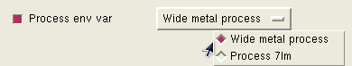

Command type: Customization command for Calibre Interactive.
Inserts a #DEFINE or #UNDEFINE pre-processor directive in the Calibre Interactive control file, or a Tcl variable in the case of TVF rule files.
CUSTOM::DEFINE ‑name var_name
[-choices {“” | choices_list }]
[-initval init_value]
[-prompt prompt_text] [‑tooltip tooltip_string] [‑multiline {0|1}]
[-boolean {0 | 1} [-select {0|1}] [-enable {0|1}]] [-display {0|1}]
[-tool { DRC | LVS | DFM | PEX | PERC | tool_list}] [-tvf {0|1}]
[‑vtype type] [‑vcmd ‘[’ list v_proc ‘]’]
[ {{-master master_spec} [‑master_select {0 | 1}]} | ‑master_expr expr_spec ]
A required option and parameter set, where var_name gives the name of the variable output to the control file.
Specifies a value for the variable being defined. A text entry field or a dropdown list is displayed.
“” (empty string) — Display a text entry field for specifying the value of the #define variable.
choices_list — Display a control button with a dropdown list of choices for the value of the variable. The values are displayed as mutually exclusive radio buttons.
The choices_list can be specified in the following ways:
A Tcl list of single elements. For a list of single elements, the values themselves are displayed in the dropdown list of the control button.
A Tcl list of two-element sublists. The first element is displayed in the fields of the dropdown list and the second element is the actual value. For example:
[list [list "Wide metal process" wmp] [list "Process 7lm" lm7]]where the brackets are required to indicate a Tcl list.
A keyword and parameter set that specifies the default value as follows:
The default value from the choices_list, if present.
The initial value for the text entry field if -choices “” is specified.
The value of the variable being defined if the ‑choices option is not specified. The assigned value cannot be changed in this case.
The init_value is read and applied the first time the Customization GUI is opened or if the customization file changes; however, init_value is overridden with the runset value if the runset option cmnCustomFileOverrideValues specifies a value for the control.
The init_value is always applied if the Customization GUI is opened using the Load button in the Customization Settings dialog box; the runset value specified with the runset option cmnCustomFileOverrideValues is not used.
Places the string prompt_text next to the control button or checkbox.
Specifies a tooltip tooltip_string for the control. Line breaks in tooltip_string are preserved in the generated tooltip.
Controls whether the text entry box is a single line (0) or multiple lines (1). The default is 0.
Controls the display of the checkbox, where 1 specifies to display the checkbox.
The default value is 1 (display a checkbox) if ‑boolean is not specified. If the checkbox is selected (the default), a #define var_name statement is generated. If the checkbox is unselected, an #undefine var_name statement is generated.
Controls the initial setting of the ‑boolean checkbox. The default value is 1 (true) if this option is not specified.
Controls whether the ‑boolean checkbox is active (responds to user input). The default value is 1 (true) if this option is not specified.
Controls whether any corresponding items are displayed in the customization dialog box. The default value is 1 (true) if this option is not specified.
If included, the statement applies only to the specified tool(s). To specify more than one tool, provide a Tcl list; for example: {DRC DFM}
If ‑tool is not specified, the command applies to all tools.
Adds a Tcl variable to the Calibre Interactive control file when 1 is specified and a TVF rule file is being used. The default is 0 (false) if this option is not specified. If the option ‑tvf 1 is specified when not using a TVF rule file, the customization command does not output any statement to the control file. See “Example 4.”
Verify the type of the input if the control creates a text entry field. The parameter type is one of the following:
none — Any type is accepted. This is the default if the ‑vtype option is not specified.
nospaces — No spaces are allowed in the input.
integer — Integer input.
float — Floating point input. Scientific notation is accepted; for example: -54.3E6.
nonnegint — Non negative integer input.
nonnegreal — Non negative floating point input. Scientific notation is not accepted.
Input that does not satisfy the specified type is ignored.
Specifies a Tcl procedure v_proc to call in order to perform input verification for controls that create a text entry field. The brackets are required to cause command substitution. The procedure v_proc should return 1 if the input is acceptable and return 0 otherwise. See “Input Type Checking for Customization GUI Entry Fields”.
An optional keyword and parameter set that specifies the current control as a dependent control to another primary control in the customization file. In other words, this option specifies that the appearance of this GUI object in the customization window depends on the value of another control referenced by master_spec or expr_spec.
See “Primary-Dependent Commands” for a complete description of using the ‑master option.
This command inserts a #DEFINE or #UNDEFINE pre-processor directive in the Calibre Interactive control file. The customization control is displayed with a checkbox by default. A #DEFINE statement is inserted if the checkbox is selected, and an #UNDEFINE statement if the checkbox is not selected. An optional text entry field or button with a dropdown list may be specified with the ‑choices argument; in this case a value is assigned to the variable.
The #DEFINE and #UNDEFINE directives are described under “Pre-Processor Directives” in the Standard Verification Rule Format (SVRF) Manual.
If the ‑tvf argument is included, then a Tcl variable is inserted in the Calibre Interactive control file, rather than a #DEFINE statement.
The ‑vtype and ‑vcmd switches are used to specify type checking for input fields. The input type checking performed with ‑vtype float and nonnegreal only checks that the input characters are valid for the specified type—checking for valid numbers is not performed. See “Input Type Checking for Customization GUI Entry Fields” for more information and examples.
This example creates a checkbox in the Customizations Settings dialog box with a “Use Marker Diode” prompt. The checkbox is selected by default.
CUSTOM::DEFINE ‑name "MARKER_DIODE" ‑boolean 1 -select 1 \
-prompt "Define MARKER_DIODE" This creates the following checkbox:
and places this command in the control file:
#define MARKER_DIODEThis example creates a text entry field and initializes the value as CLK.
CUSTOM::DEFINE -name NET_NAME -choices {""} -initval "CLK" \
-prompt "Enter net name for analysis"This creates the following checkbox with a text entry field:
This example creates a dropdown list of choices for the value of the variable being defined. The dropdown list displays specified text for each choice.
CUSTOM::DEFINE -name PROCESS -prompt "Process env var" \
-choices [list [list "Wide metal process" wmp] \
[list "Process 7lm" lm7]]
This creates the following checkbox with a dropdown list of choices:

This example shows the use of the ‑tvf option. The following commands in a customization file:
CUSTOM::DEFINE -name df_varA -initval 3 -prompt "df_varA" -tvf 1
CUSTOM::DEFINE -name df_varB -prompt "df_varB" -select 0 -tvf 1
CUSTOM::DEFINE -name df_tvfC -choices {"poly" "metal" "all"} -tvf 1 produce this output by default at the beginning of the TVF control file:
## +++ TVF CUSTOMIZATION SETTINGS START +++
set df_varA 3
set df_varB 0
set df_tvfC "poly"
## +++ TVF CUSTOMIZATION SETTINGS END +++